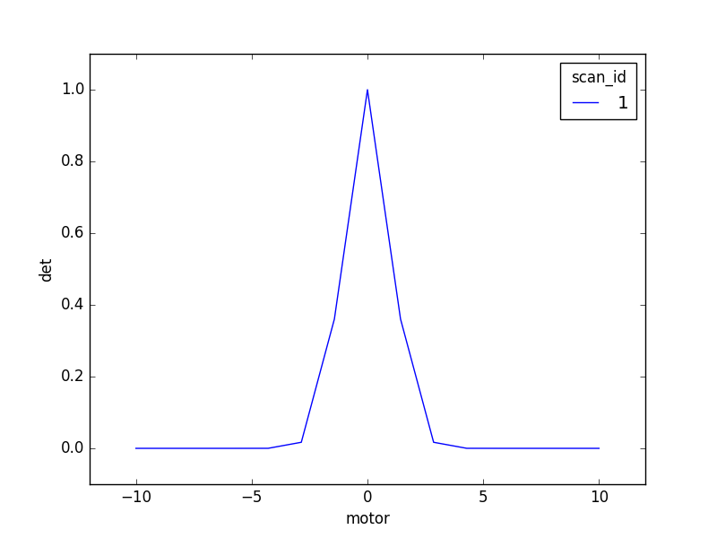

Perform a simple scan with a data table and plot¶
Problem¶
Move a motor in equally spaced steps, stopping at each position to acquire a reading from one or more detectors.
Note
Interested in a different kind of scan? A simple “count”? A more complex
Fermat spiral? In the solution below, replace scan with
one of these.
Approach¶
Set up a table and a plot, create a plan, and execute it. View the live stream of data on the table and the plot while it is collected.
Example Solution¶
As an example, we can use a simulated motor and detector. You can substitute any real motors or detectors that may already be defined in your configuration.
from bluesky.examples import motor, det
We will import a plan, which generates instructions to be executed. We’ll
also import LiveTable and LivePlot. Typically, this is done as part
your configuration (your IPython profile). It happens automatically at startup
and need not be typed every time.
from bluesky.plans import scan
from bluesky.callbacks import LiveTable, LivePlot
First, set up a table and a plot. The table takes a list of field names to show. The plot takes a field name for y followed (optionally) by a field name for x. (If only y is provided, it plots y against point number.)
In [1]: subs = [LiveTable(['motor', 'det']), LivePlot('det', 'motor')]
You can name the variable anything you like; we call it subs, short for
“subscriptions.” They are functions that “subscribe” to the live stream of
data from the scan.
We’ll scan motor from -10 to 10 inclusive, sampling 15 equally-spaced
points, and reading detector det at each point. We specify this like so:
scan([det], motor, -10, 10, 15)
Notice that det is in square brackets because scan expects list of
one or more detectors.
Finally, this command tells the RunEngine, RE, to execute our scan and send
the data to subs.
In [2]: RE(scan([det], motor, -10, 10, 15), subs)
+-----------+------------+------------+------------+
| seq_num | time | motor | det |
+-----------+------------+------------+------------+
| 2 | 01:53:15.6 | -8.571 | 0.000 |
| 1 | 01:53:15.5 | -10.000 | 0.000 |
| 3 | 01:53:15.7 | -7.143 | 0.000 |
| 4 | 01:53:15.8 | -5.714 | 0.000 |
| 5 | 01:53:15.9 | -4.286 | 0.000 |
| 6 | 01:53:16.0 | -2.857 | 0.017 |
| 7 | 01:53:16.0 | -1.429 | 0.360 |
| 8 | 01:53:16.1 | 0.000 | 1.000 |
| 9 | 01:53:16.2 | 1.429 | 0.360 |
| 10 | 01:53:16.3 | 2.857 | 0.017 |
| 11 | 01:53:16.4 | 4.286 | 0.000 |
| 12 | 01:53:16.4 | 5.714 | 0.000 |
| 13 | 01:53:16.5 | 7.143 | 0.000 |
| 14 | 01:53:16.6 | 8.571 | 0.000 |
| 15 | 01:53:16.7 | 10.000 | 0.000 |
+-----------+------------+------------+------------+
generator scan ['2fb87c'] (scan num: 1)
Out[2]: ['2fb87ca4-6e62-4ece-90bd-7dfefabe7209']
This table prints line by line while the scan is executed. The bottom of the table shows additional information, the data type and name of the plan, the unique ID of the run, and an integer scan ID.
Note
Since other users can reset the scan ID to 1, you should not rely on it as a long-term reference to your data. Scribble down the first 5 or 6 characters of the unique ID instead.
While the table prints line by line, points appear on a plot one at a time. This is the final result:
Let’s look again at the output from our command. As shown above, it was
['73b23bd3-54ca-40a4-9a5f-46486e8f3a91']
It looks like gibberish, but it’s useful: it is a list of the unique ID(s) of the run(s) generated by the plan, and it allows usage like this:
run_ids = RE(scan([det], motor, -10, 10, 15), subs) # assign ids to a variable
some_function_that_analyzes_or_exports_data(run_ids)